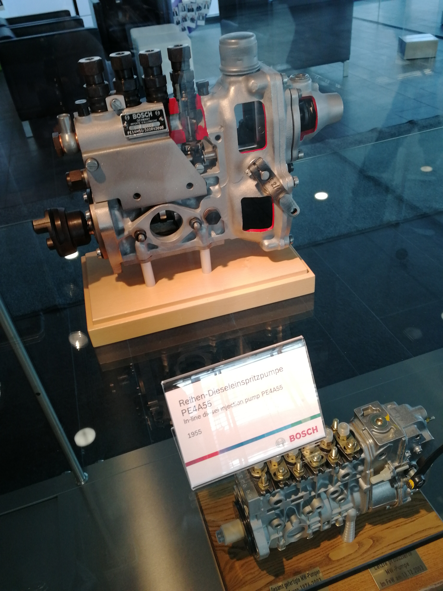
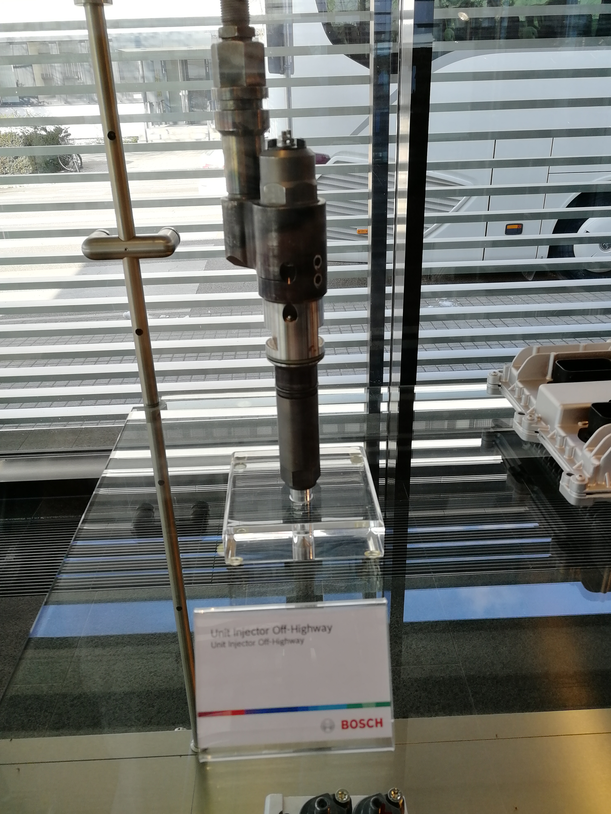
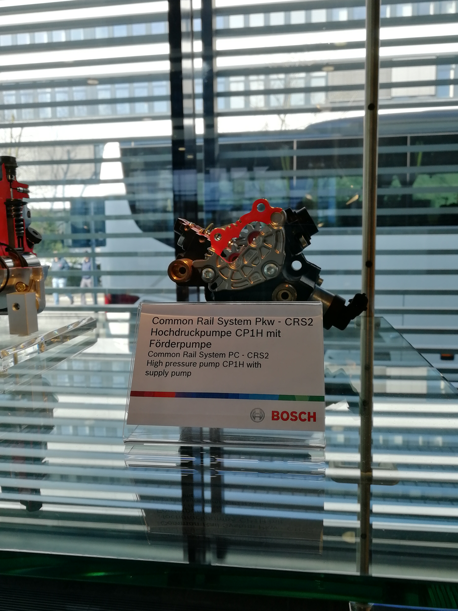
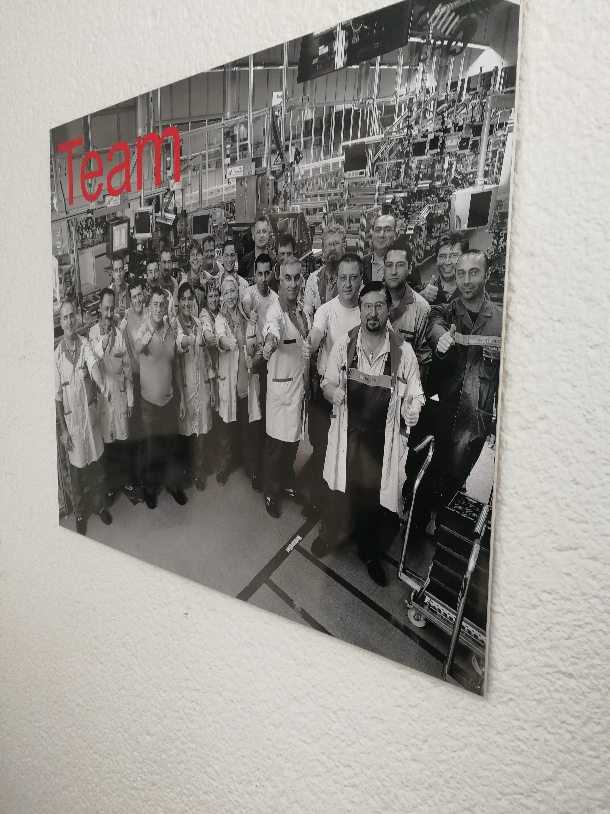
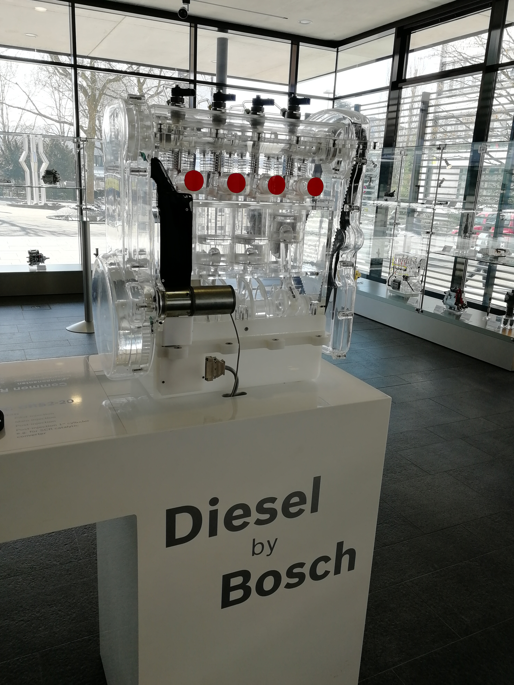

斯图加特·博世：一扇进不去镜头，却挡不住判断的工厂大门
Bosch in Stuttgart — a factory gate no lens enters, yet judgment needs no photo.

（2016 年 · 德国 · 斯图加特 · 博世工厂）
这次去的很可能是博世的费尔巴哈（Feuerbach）工厂——费尔巴哈本身就在斯图加特市区里，是博世在德国本土历史最悠久、规模最大的工厂之一，1901 年博世第一家工厂就设在斯图加特，后来费尔巴哈这个厂区从柴油技术起步，至今仍是博世柴油技术的生产中心之一。国内不少企业考察团去博世参观，走的也是这条线：进厂区前签保密协议、领访客证，厂方会强调拍照限制和数据保密要求，接待区一般会有多媒体展示，介绍集团发展历程和全球布局——这和你说的「里面不让拍照，外面有展厅可以拍」完全对得上。


博世这家公司，1886 年由罗伯特·博世本人在斯图加特创立，起家做的是给内燃机改良火花塞，1897 年把这个火花塞装到了汽车上，由此切入了汽车零部件这门生意。今天博世是全球最大的汽车零部件供应商之一，产品线早就不只是汽车零件了——电动工具、家用电器、安全系统、热力技术，几乎渗透进了德国制造业的每一个毛细血管。它现在的股权结构也很特别：92% 的股份由罗伯特·博世基金会持有，这意味着博世本质上不是一家追逐短期股东回报的上市公司，而是一家用基金会架构把长期主义焊死在公司治理里的企业——这也是为什么博世能在电动工具、柴油技术这些需要长周期研发投入的领域里，一直保持技术领先的位置。


让一家企业穿越百年周期的，往往不是某一代产品，是治理结构给它留出的"不着急"的空间。
——董立鑫 海鑫汇创始人兼执行总裁，新加坡世贸秘书长兼首席运营官
本文整理自董立鑫（Bruce Dong）海外产业考察记录，首发于海鑫汇。